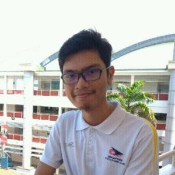
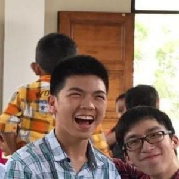
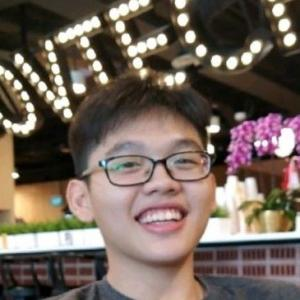
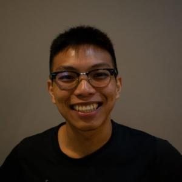

“Hello and welcome to our blog! Here are some basic information about us, the people behind this tracked vehicle project”

Ahmad Rifaaie Bin Mohamed Ali
Rifaaie, or in short, Rif, is our mechanical guy of the group who handles anything related to the mechanics of our tracked vehicle. Has good mechanical and some electrical knowledge.
Link to Rifaaie’s Github:
https://github.com/ahmadrifaaie

Hans Delano
Hans, he is our coding guy, who has skills in electrical and computer programming. He helps out in programming the tracked vehicle to carry out its purpose.
Link to Hans’ Github:

Jabez Tho Ngee Qi
Jabez, our coding guy again, who forms a good duo with Hans to code our track vehicle up to date, has good electrical and coding knowledge.
Link to Jabez’s Github:

Lee Wei Juin
And finally, Wei Juin, he has good electrical and coding knowledge. He helps to ensure the electrical requirements needed for the track vehicle are met.
Link to Wei Juin’s Github: